Show Code
dp = 2.02 / (0.03 + 0.01)
print(dp)50.5Serika Yuzuki
October 10, 2024
\[ \require{physics} \require{mhchem} \require{ams} \]
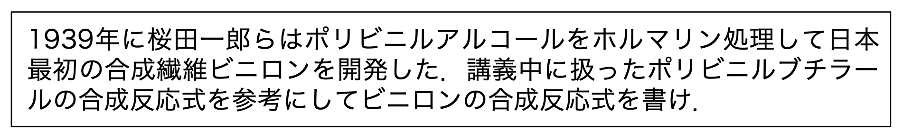
ポリビニルアルコールとアセトンの反応
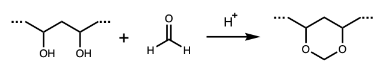
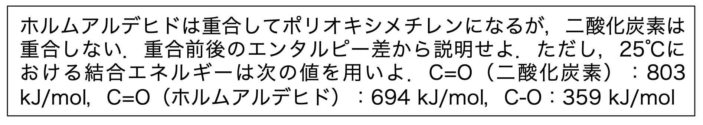
計算問題です
重合度を\(n\)としたとき、ホルムアルデヒドの反応では \[694n-2\cdot 359 n= -24n \; \text{kJ/mol}\] と発熱反応になるが、二酸化炭素では \[803n -2\cdot 359 n= 85n \; \text{kJ/mol} \] と吸熱反応になるため。
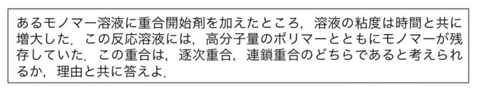
| 項目 | 逐次重合 | 連鎖重合 |
|---|---|---|
| 成長の進行 | 基質全体で成長が進行 | 各分子鎖の一端もしくは両端でのみ成長が進行 |
| モノマーの消滅 | モノマーは反応の初期段階で消滅 | 反応進行中の長い間モノマーが残存 |
| 反応の段階 | 類似の段階的成長が反応過程全体にわたって繰り返される | 開始反応、伝播反応、停止反応、連鎖移動の異なる段階を踏んで進行 |
| 平均分子量の増加 | 低転換率では平均分子量はゆっくりと増大し、長い分子鎖長を得るためには高度に反応が進行する必要がある | 主鎖分子量は反応中の速い段階で迅速に増加し、重合反応中にわたっておおよそ変化しない |
| 反応後の活性 | 活性を保ったまま終了（停止しない） | 停止反応後には活性がなくなる |
| 重合開始剤の必要性 | 重合開始剤の必要がない | 重合開始剤を必要とする |
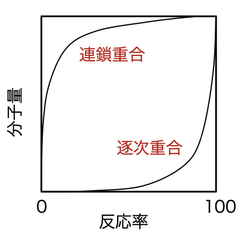
連鎖重合であると考えられる。次が理由である。 1. 重合開始材が必要なのは連鎖重合の特徴 2. モノマーと高分子量のポリマーが混ざっている 3. 問題文から粘度の増加が反応開始とともに見られていると推測される
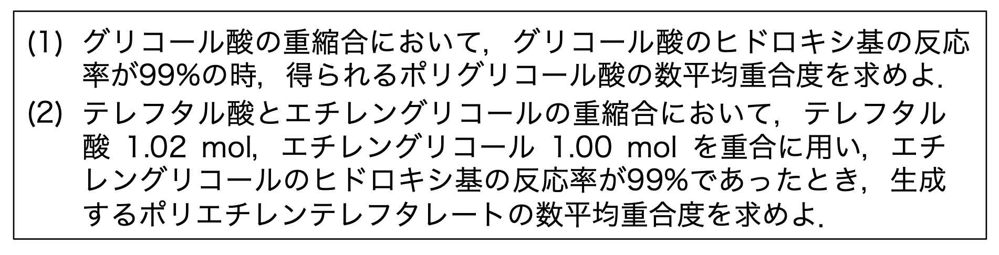
\[ \mathrm{DP} = \frac{\text{反応前の物質量}}{\text{反応後の物質量}} = \frac{1}{1-p} \]
ただし、\(p\) は反応率
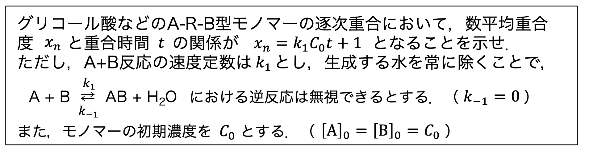
濃度についての微分方程式を解けばいい。テキストの解答は面倒。
反応後の濃度 \(C\) は時間 \(t\) 後に
\[ \begin{aligned} \dv{C}{t} &= -k_1 C^2 \\ C &= \frac{1}{k_1t + \frac{1}{C_0}} \end{aligned} \] となるので、数平均重合度は
\[ \mathrm{DP} = \frac{C_0}{C} = k_1 C_0 t + 1 \]
と示される。
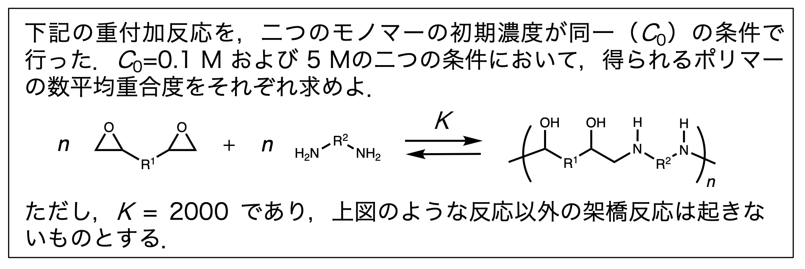
平衡定数が絡んだ数平均重合度の問題は、反応度をまず求めれば楽。
\[ K = \frac{C_0p}{C_0^2(1-p)^2} = \frac{p}{C_0(1-p)^2} \]
これから \(p\) を求め、その後数平均重合度 \(1/1-p\) を求める。一応解の公式とかを使った面倒な方の式は出しておく。
\[ \mathrm{DP} = \frac{2KC_{0}}{\sqrt{ 4KC_{0}+1} - 1 } \]
これを使おうと覚えるのはきついと思われる。
\[ \begin{aligned} p &= \frac{2KC_{0}+1-\sqrt{ (2KC_{0}+1)^2 - 4K^2C_{0}^2 }}{2KC_{0}} \\ \bar{X_{n}} &= \frac{2KC_{0}}{\sqrt{ 4KC_{0}+1} - 1 } \end{aligned} \]
100.5012499921876| \(C_0\) | \(\bar{X_n}\) |
|---|---|
| 0.1 | 14.7 |
| 5 | 100 |
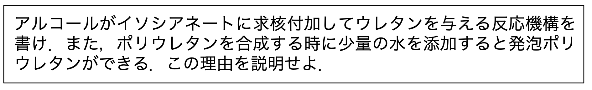
イソシアネートとはRNCOの形の有機化合物。これにROHが攻撃をする。
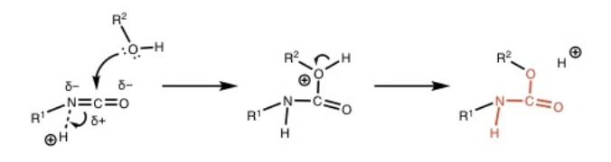
水がイソシアネートと反応し、カルバミン酸となり、これが自発的に脱炭酸することによって二酸化炭素が発生し、ポリウレタンの液状混合物の中に気泡を形成し、そのまま硬化するため。
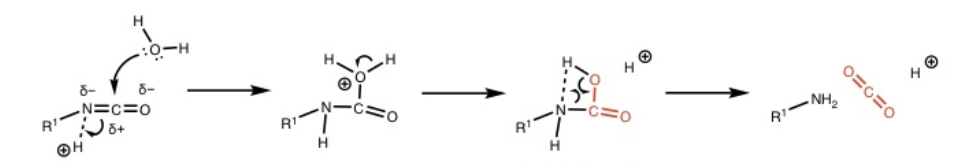
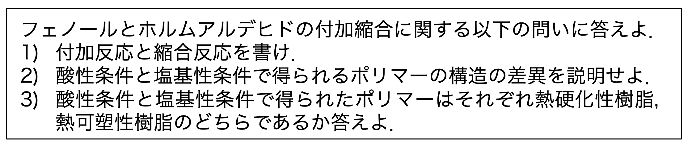
| 液性 | 生成物 | 配向性 | 特徴 | 可塑性 |
|---|---|---|---|---|
| 塩基性 | レゾール | フェノールの電離による求核付加反応 | メチロール基が多い | 熱硬化樹脂 |
| 酸性 | ノボラック | ホルムアルデヒドのプロトン化 | メチロール基が少ない | 熱可塑樹脂 |
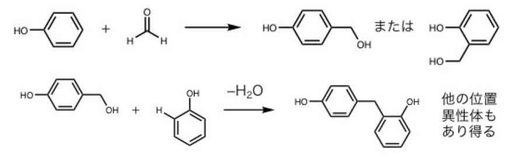
(2)(3)
塩基性条件下では側鎖にメチロール基が多いレゾールが生成される。このため、メチロール同士やフェノールとの脱水によって熱硬化樹脂が得られる。酸性条件下では付加反応より縮合反応が優先され、熱可塑樹脂であるノボラックが得られる。
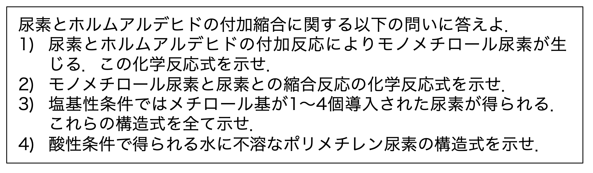
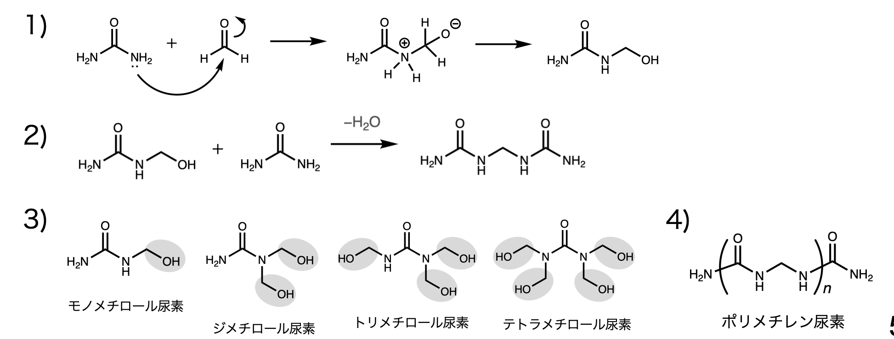
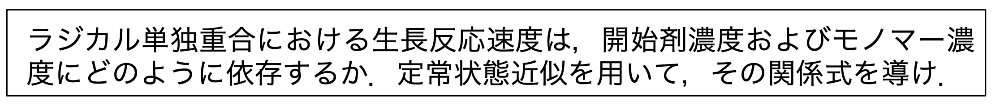
速度係数の名前の意味の一覧。
| プロセス | 英語 | 速度係数 |
|---|---|---|
| 開始剤の分解 | Dissociation | \(k_d\) |
| 開始反応 | Initiation | \(k_i\) |
| 成長反応 | Propagation | \(k_p\) |
| 終了反応 | Termination | \(k_t\) |
必要な前提は３つ。
\[ \begin{aligned} \left. \dv{[\ce{P^.}]}{t} \right|_{\text{増加}} &= k_d 2f [\ce{I}] &\text{開始剤は速攻}\ce{P^.}になる\\ -\dv{[\ce{M}]}{t} &= k_p [\ce{M}][\ce{P.}] &\text{モノマーの消費は $k_p$ のみ}\\ \left. \dv{[\ce{P^.}]}{t}\right|_{\text{減少}} &= k_t [\ce{P^.}]^2 &\ce{P^.}\text{の消費はこれだけ}\\ \end{aligned} \]
必要式はこの３つだけ。
\[ \begin{aligned} {}[\ce{P^.}] &= \sqrt{\frac{k_d 2f [\ce{I}]}{k_t}} \\ -\dv{[\ce{M}]}{t} &= k_p \sqrt{\frac{k_d 2f [\ce{I}]}{k_t}} [\ce{M}] \\ \end{aligned} \]
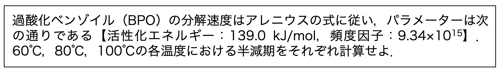
半減期についてだが、ただの一階微分方程式の問題。
\[ [\ce{I}] = [\ce{I}]_0 e^{-k_dt} \]
なので、半減期は
\[ t_{1/2} = \frac{\ln 2}{k_d} \]
という式。 \(k_d = A\exp{-E/RT}\) を入れて考えるだけ。
半減期の式は次のとおり
\[ t_{1/2} = \frac{\ln 2}{Ae^{-E_a/RT}} \]
\(E_a = 139.0 \mathrm{kJ\ mol^{-1}},\ A= 9.34 \times 10^{15}\) なので、
| 温度(°C) | 半減期(s) |
|---|---|
| \(60\) | \(4.7 \times 10^5\) |
| \(80\) | \(2.7 \times 10^5\) |
| \(100\) | \(2.2 \times 10^4\) |
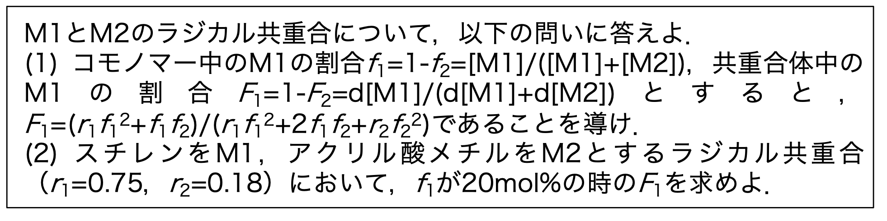
共重合組成式 may-lewis の式の導出を軽くしておく。
\[ \begin{aligned} \ce{P1^. + M1 &-> P1^.} &\quad k_{11} \\ \ce{P1^. + M2 &-> P1^.} &\quad k_{12} \\ \ce{P2^. + M1 &-> P2^.} &\quad k_{21} \\ \ce{P2^. + M2 &-> P2^.} &\quad k_{22} \\ \end{aligned} \]
以上の反応から
\[ \begin{aligned} \dv{[\ce{P1^.}]}{t} = k_{11}[\ce{P1^.}][\ce{M1}] + \textcolor{red}{k_{12}[\ce{P1^.}][\ce{M2}]} \\ \dv{[\ce{P2^.}]}{t} = \textcolor{red}{k_{21}[\ce{P2^.}][\ce{M1}]} + k_{22}[\ce{P2^.}][\ce{M2}] \\ \end{aligned} \]
定常状態濃度が一定だから、末端が変わる赤い部分が同じになる。それで、約分処理をしてあげると、 \(r_1 = k_{11} / k_{12}\), \(r_2 = k_{22} / k_{21}\) として
\[ \frac{\mathrm{d}[\mathrm{M} 1]}{\mathrm{d}[\mathrm{M} 2]}=\frac{[\mathrm{M} 1]}{[\mathrm{M} 2]}\left(\frac{r_1[\mathrm{M} 1]+[\mathrm{M} 2]}{[\mathrm{M} 1]+r_2[\mathrm{M} 2]}\right) \]
(1)mayo-lewisの式は次のとおり
\[ R = \frac{\mathrm{d}[\mathrm{M} 1]}{\mathrm{d}[\mathrm{M} 2]}=\frac{[\mathrm{M} 1]}{[\mathrm{M} 2]}\left(\frac{r_1[\mathrm{M} 1]+[\mathrm{M} 2]}{[\mathrm{M} 1]+r_2[\mathrm{M} 2]}\right) \]
\(F_1 = \frac{\dd {}[\mathrm{M1}]}{\dd {}[\mathrm{M1}] + \dd {}[\mathrm{M2}]}\) なので、 \(F_1 = \frac{R}{1+R}\) , \(f_1 = \frac{[\mathrm{M1}]}{[\mathrm{M1}] + [\mathrm{M2}]}\) より、 \(\frac{[\mathrm{M1}]}{[\mathrm{M2}]} = \frac{f_1}{f_2}\)
\[ \begin{aligned} F &= \frac{R}{R+1} = \frac{\qty(\frac{f_1}{f_2})^2r_1+\qty(\frac{f_1}{f_2})}{\qty(\frac{f_1}{f_2})^2r_1 + 2\qty(\frac{f_1}{f_2}) + r_2} \\ &=\frac{f_1^2r_1 + f_1f_2}{f_1^2r_1 + 2f_1f_2 + f_2^2r_2} \end{aligned} \]
0.408426483233018\(F_1 = 0.41\) となる。
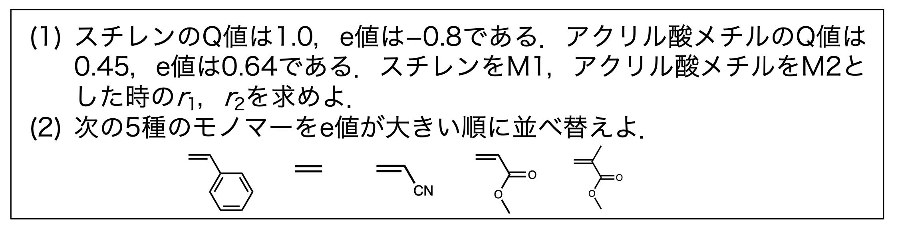
経験則の式として次がある。
\[ r_1=\frac{Q_1}{Q_2} e^{\left(-e_1\left(e_1-e_2\right)\right)}, \quad r_2=\frac{Q_2}{Q_1} e^{\left(-e_2\left(e_2-e_1\right)\right)} \]
覚えるしかない。 \(Q\) は共役効果、 \(e\) は極性効果。
| モノマー | \(Q\) 値 | \(e\) 値 |
|---|---|---|
| アクリル酸メチル | 0.45 | 0.64 |
| メタクリル酸メチル | 0.78 | 0.40 |
| スチレン | 1.0 | -0.8 |
| 酢酸ビニル | 0.026 | -0.88 |
\[ r_1=\frac{Q_1}{Q_2} e^{\left(-e_1\left(e_1-e_2\right)\right)} \]
\[ r_2=\frac{Q_2}{Q_1} e^{\left(-e_2\left(e_2-e_1\right)\right)} \]
(np.float64(0.702231397093028), np.float64(0.1790468642030421))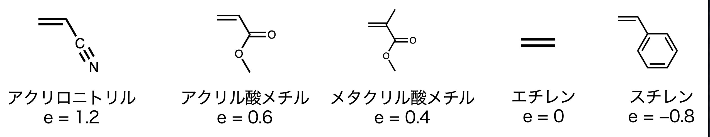
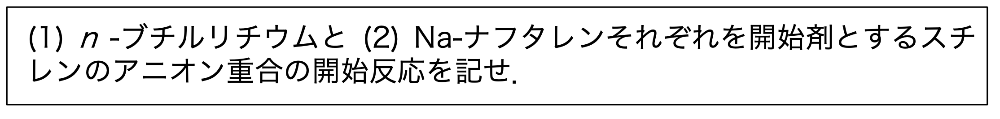
スチレンには無理矢理にでも電子を与えて反応をさせていく。ナフタレン錯体については２官能性開始剤となることを覚える。
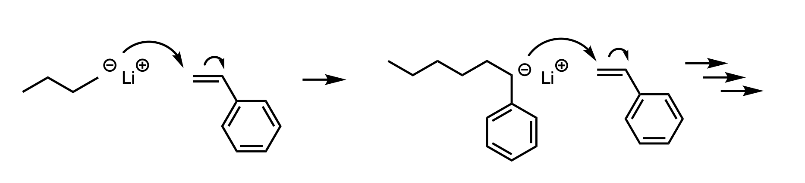
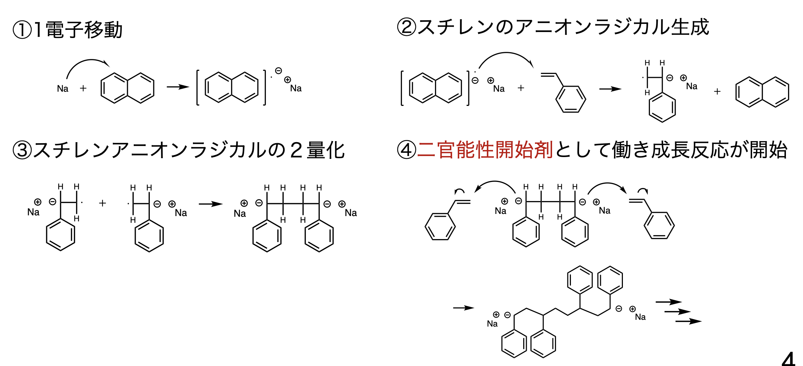
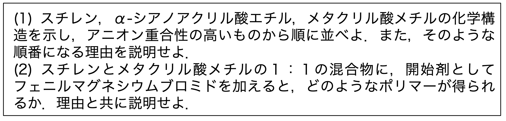
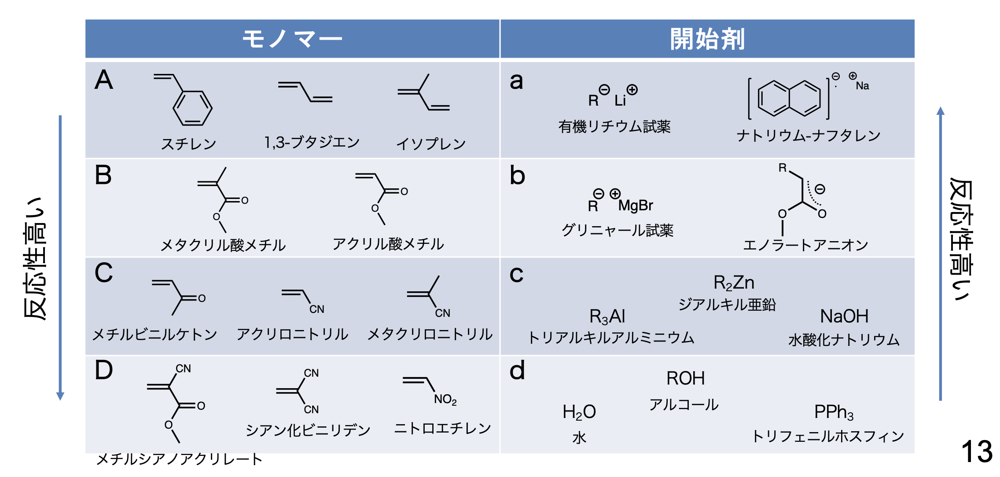
この表は全部覚える必要はなさそう。だけど、大体は頭に入れとかないといけないみたい。
from rdkit import Chem
from rdkit.Chem import Draw
# Define SMILES strings for each compound
smiles = {
"α-シアノアクリル酸エチル": "C=C(C#N)C(=O)OCC",
"メタクリル酸メチル": "CC(=C)C(=O)OC",
"スチレン": "C=Cc1ccccc1"
}
# Convert SMILES to RDKit molecule objects
molecules = [Chem.MolFromSmiles(smile) for smile in smiles.values()]
# Draw molecules
Draw.MolsToImage(molecules, legends=list(smiles.keys()))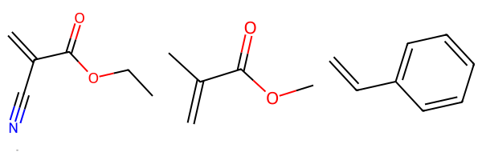
\(\ce{C=C}\) に結合した置換基の電子吸引性が高いものほどアニオン重合反応性が強い。
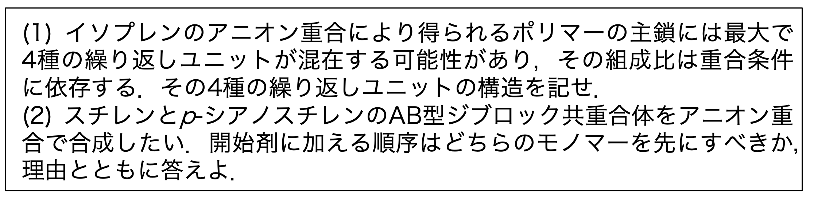
一番近いやつと一番遠いやつ。
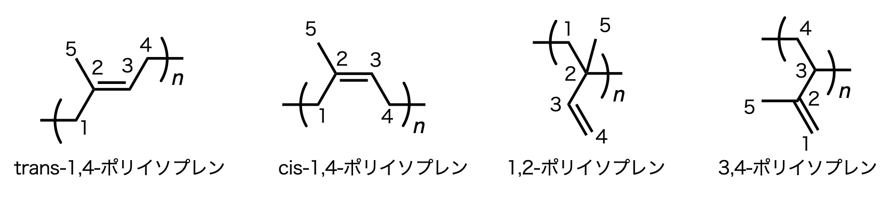
(2)スチレン。電子求引性の置換基をもつp-シアノスチレンの成長末端は求核剤としての反応性が低下しており，その成長末端はスチレンの重合を開始できないから．
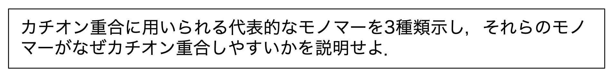
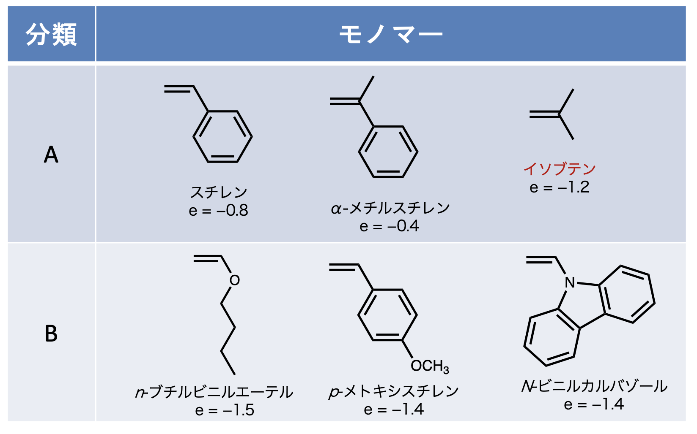
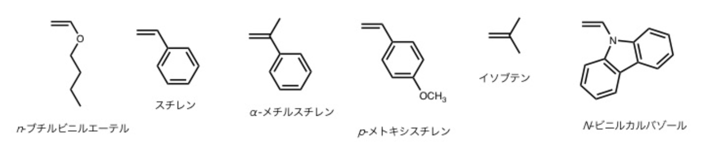
スチレン、イソブテン、n-ブチルビニルエーテル
C=C上の電子密度が上昇し、カチオンからの求電子付加を受けやすいため。
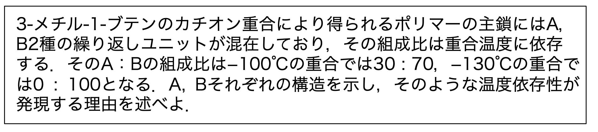
異性化についての知識が必要。
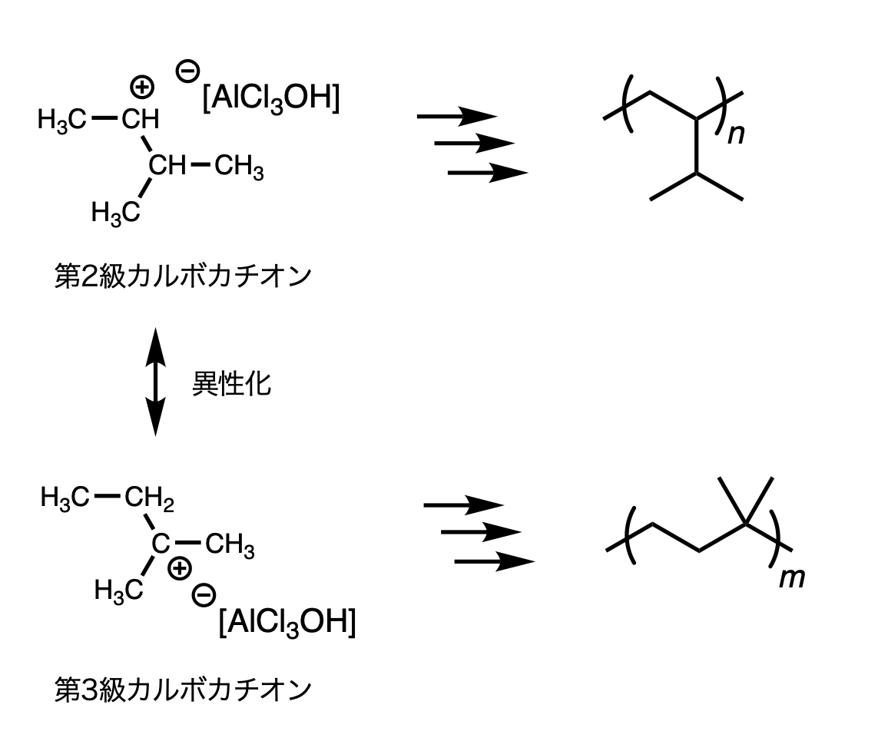
付加する前に一部，水素が転移して第2級カルボカチオンからより安定な第3級カルボカチオンに異性化する．重合温度が低いほどカルボカチオンとモノマーの反応速度が遅くなるため，付加する前に異性化する割合が増えるから．
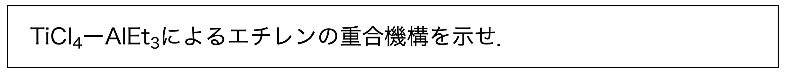
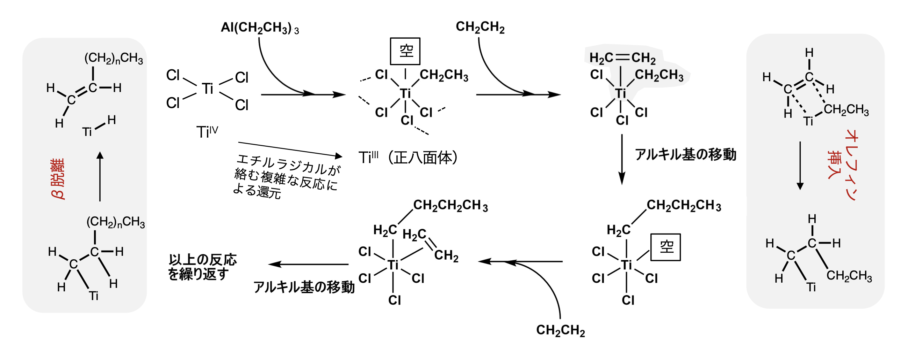
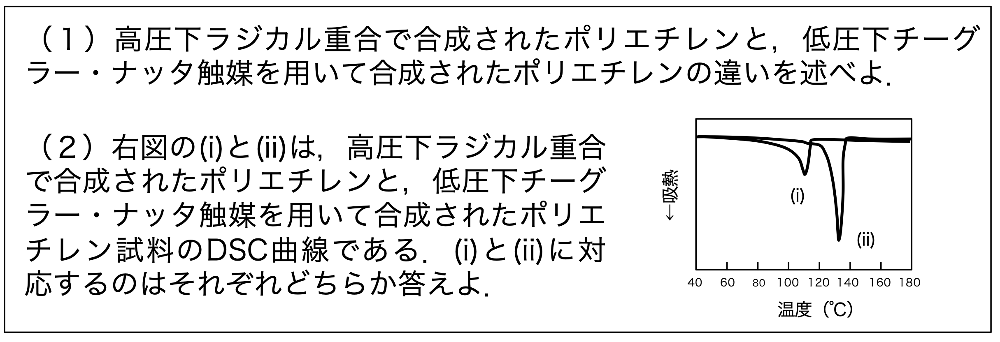
高圧下ラジカル重合で合成されたポリエチレンは分岐が多く密度が低い（低密度ポリエチレン）．分岐構造が規則正しくパッキングして結晶化するのを阻害するため，結晶化度は低く軟らかい．低圧下チーグラー・ナッタ触媒を用いて重合されたポリエチレンは，ほぼ直鎖状の構造をしている．分岐が少ないため，分子鎖がパッキングし結晶化しやすく密度が高い（高密度ポリエチレン）．また，高密度ポリエチレンの方が低密度ポリエチレンよりも結晶のサイズが大きく融点も高い．
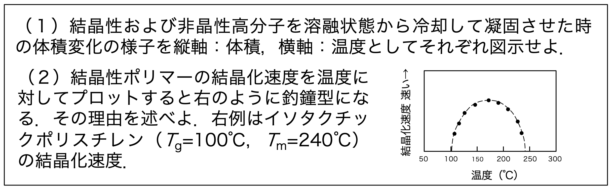
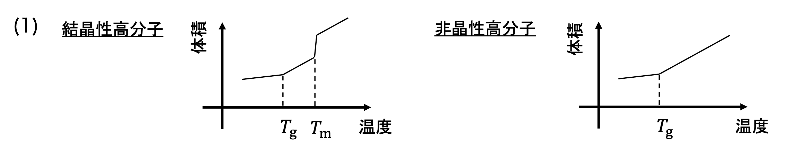
2.過冷却度が小さい融点（240 \({}^{\circ}\text{C}\) ）近傍では，分子運動が激しいことから結晶核ができづらい．温度をここから下げていくと結晶核の生成速度があがっていく．しかし，ガラス転移温度（100 \({}^{\circ}\text{C}\) ）に近づいていくと今度は分子鎖の運動性が著しく落ちて，結晶核の成長が遅くなっていく．そのため，融点とガラス転移温度の中間あたりにピークトップをもつ釣鐘型の曲線となる．
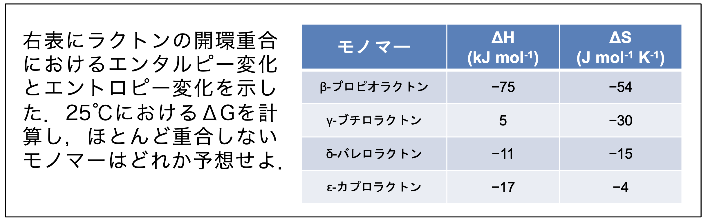
焦らずこの式使うだけですね。
\[ \Delta G = \Delta H - T\Delta S \]
γ-ブチロラクトン
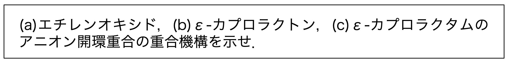
マイナスになって、Oの隣を攻めていく
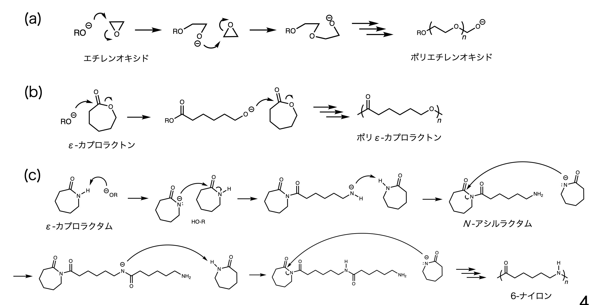
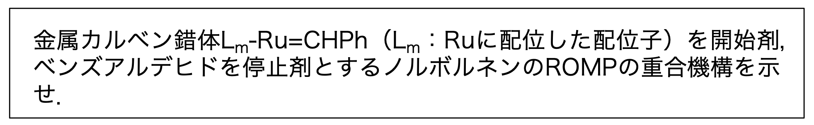
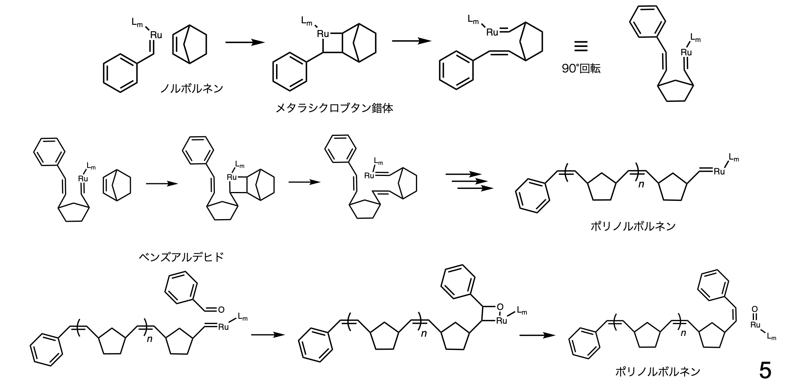
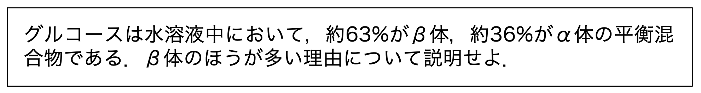
かさ高い置換基がエクアトリアル位にある方が立体的に安定である．α体とβ体のいす形配置を比較すると，1位の炭素に結合したOH基がα体はアキシアル位にあるのに対し，β体はエクアトリアル位にある．したがって，β体のほうが多くなる．
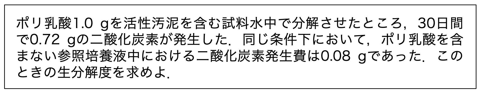
ポリ乳酸は一個分だけに注目して \(\ce{C3H4O2}\) として考える。
\[ \ce{C3H4O2 + 3O2 -> 3CO2 + 2H2O} \]
から、1.0gのPLAが分解した時に発生する二酸化炭素は
\[ \frac{1.0}{72} \times 3 \times 44 = 1.83 \mathrm{g} \]
ゆえに分解度は
\[ \frac{0.72-0.08}{1.83} = 0.35 \]
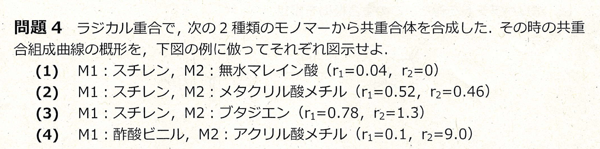
import numpy as np
import matplotlib.pyplot as plt
# データ設定
r_values = {
"(r1=0.04, r2=0)": (0.04, 0),
"(r1=0.52, r2=0.46)": (0.52, 0.46),
"(r1=0.78, r2=1.3)": (0.78, 1.3),
"(r1=0.1, r2=9.0)": (0.1, 9.0),
"(r1=17, r2=0.02)": (17, 0.02),
}
# プロット関数
def generate_copolymer_composition_curves(r_values):
f1 = np.linspace(0, 1, 500) # モノマー比 (f1)
f2 = 1 - f1 # f2 = 1 - f1
plt.figure(figsize=(10, 8))
for label, (r1, r2) in r_values.items():
# 共重合組成式
with np.errstate(divide='ignore', invalid='ignore'): # 0除算の警告を無視
F1 = (r1 * f1**2 + f1 * f2) / (r1 * f1**2 + 2 * f1 * f2 + r2 * f2**2)
F1 = np.nan_to_num(F1) # NaNを0に変換
plt.plot(f1, F1, label=label)
plt.title("Copolymer Composition Curves", fontsize=16)
plt.xlabel("$f_1$ (Monomer Fraction in Feed)", fontsize=14)
plt.ylabel("$F_1$ (Monomer Fraction in Polymer)", fontsize=14)
plt.grid(True)
plt.legend(fontsize=12)
plt.show()
# 実行
generate_copolymer_composition_curves(r_values)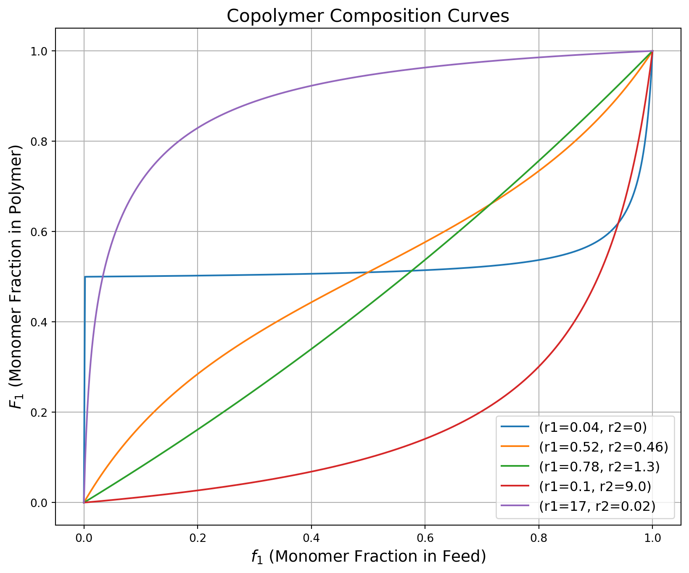
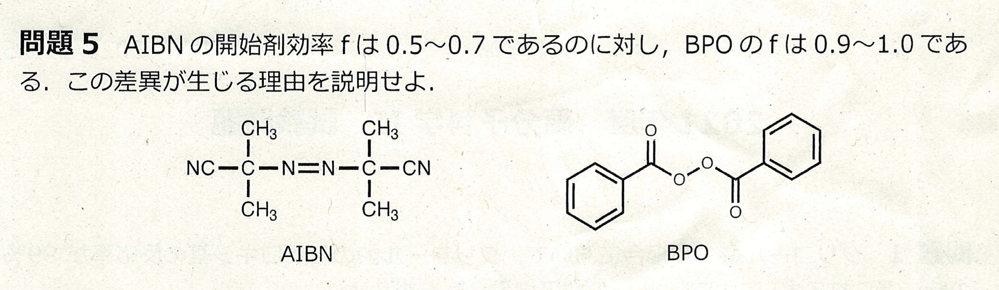
別れた時のことを考えればいい。
AIBOは脱膣するが、BPOは脱膣しない。
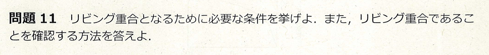
条件：連鎖移動反応や停止反応などの生長末端を失活させる副反応を伴わない
確認方法：ポリマーの長さが一定であることを確認する
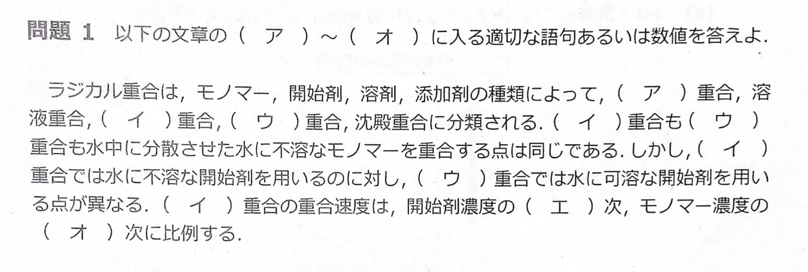